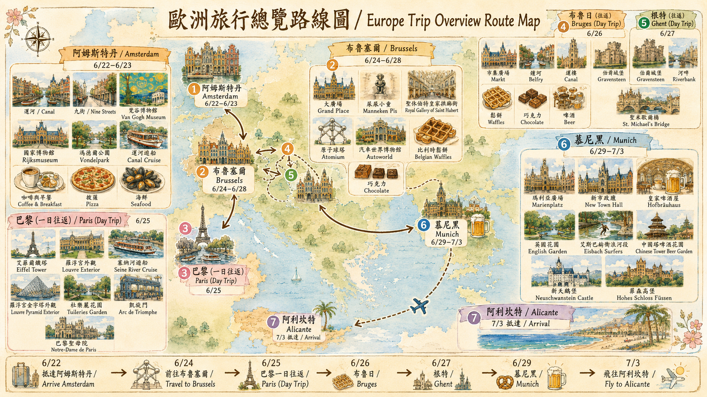
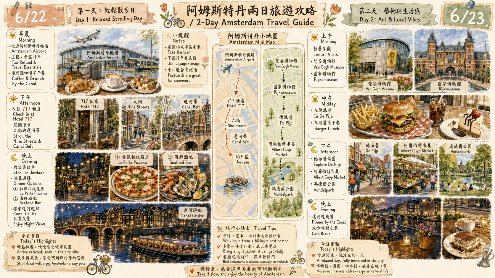
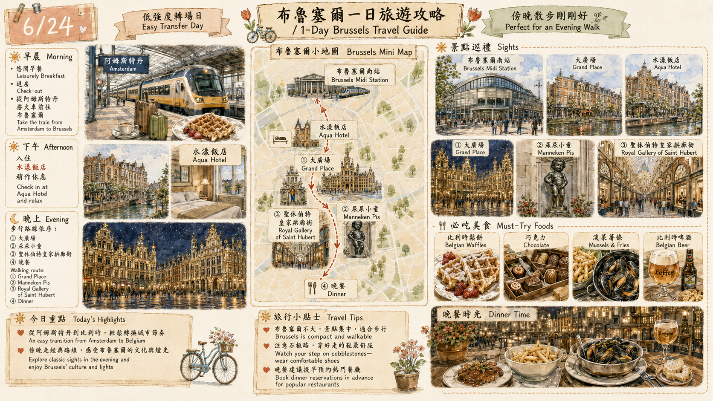
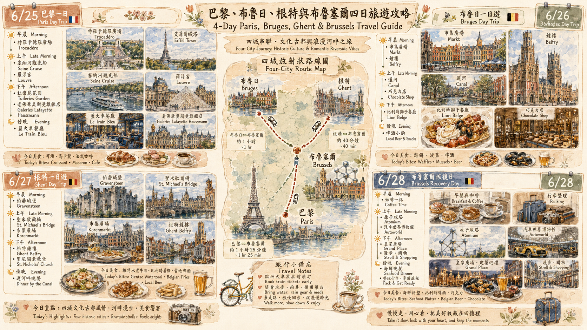
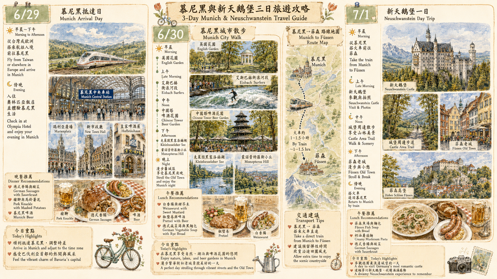
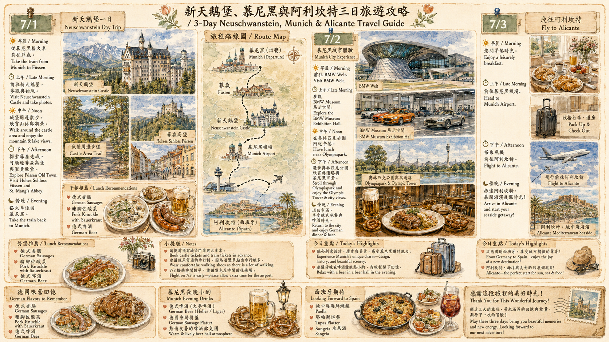

{kind=link}
6/21
Sun
台北 → 阿姆斯特丹｜搭機日
住宿：機上22:40 搭乘 CI0073 從台北桃園出發，隔天早上抵達阿姆斯特丹。
當日天氣預抓｜台北 / 機上
早：—午：—晚：22:40 起飛
搭機日，以機艙保暖與睡眠為主。
穿搭建議：薄外套、頸枕、壓縮襪；隨身帶保濕與眼罩。
- 22:40 從台北桃園機場出發。
- 機上以睡眠與補水為主，抵達歐洲後直接進入白天行程。
- 出發前確認護照、信用卡、歐洲網卡或漫遊、火車票、飯店訂房、博物館票券。
最後確認版：台北 → 阿姆斯特丹 → 布魯塞爾 → 巴黎 / 布魯日 / 根特一日往返 → 慕尼黑 → 新天鵝堡 / 菲森 → 法蘭克福 → 台北。

點擊圖片可開啟高解析大圖。
每一天都包含：行程動線、飯店地圖、景點 Google 地圖、官方連結、天氣穿搭與安全提醒。
📷 = 專業相機拍風景／建築／夜景值得；📱 = 手機隨拍就夠（美食、市集、博物館內、車站）。天氣為 6/21 最新預報（🌞晴 ⛅多雲時晴 ☁️陰 🌦️短陣雨 🌧️雨 ⛈️雷雨 🥵熱浪；7/1 後較不穩，出發前再校正）。
22:40 搭乘 CI0073 從台北桃園出發，隔天早上抵達阿姆斯特丹。
搭機日，以機艙保暖與睡眠為主。
穿搭建議：薄外套、頸枕、壓縮襪；隨身帶保濕與眼罩。
07:40 抵達 AMS，第一天以寄放行李、運河早午餐、九街、約旦區與運河夜遊為主。
白天偏熱，晚間仍溫暖；有雷暴 / 高溫警示背景，請出發前再確認。
穿搭建議：短袖或薄襯衫＋輕薄外套；帽子、水瓶、防曬、折疊傘。
博物館與在地市集日：梵谷博物館、國家博物館、De Pijp、Albert Cuyp 市集、馮德爾公園。
博物館日仍偏熱，可能短雨；室內外溫差需注意。
穿搭建議：透氣上衣＋薄外套；防潑水鞋、折疊傘、手機防水袋。
行程中的午餐選擇，可搭配 De Pijp 區域散步。
從阿姆斯特丹轉往布魯塞爾，傍晚走大廣場、尿尿小童與聖休伯特皇家拱廊街。
轉場日偏熱，拖行李與石板路會較耗體力。
穿搭建議：透氣衣物、好走防滑鞋；水瓶、防曬，外套可放行李。
從布魯塞爾往返巴黎，一日抓精華外觀、塞納河、午餐與百貨，不硬塞入館。
巴黎當日非常炎熱，並有高溫橙色警報與雷暴提醒；11:00–21:00 避免過度曝曬。
穿搭建議：最薄透氣衣物、帽子、墨鏡、防曬、水瓶；行程中穿插室內與船上休息。
拍艾菲爾鐵塔全景最經典角度之一。
羅浮宮到協和廣場之間的古典花園，適合散步與休息。
早班火車到布魯日，主打市集廣場、鐘樓、運河散步、鬆餅、巧克力與 Lion Belge 晚餐。
白天舒適到偏熱，晚間有雷暴警示背景；運河邊風較明顯。
穿搭建議：透氣上衣＋薄外套；防滑鞋、折疊傘，巧克力避免長時間曝曬。
布魯日適合採買巧克力與拍櫥窗。
根特比布魯日更有生活感，重點放在伯爵城堡、河畔午餐、聖米歇爾橋與老城散步。
偏熱且有高溫 / 雷暴警示背景；橋上與河畔拍照需補水。
穿搭建議：短袖、防曬、帽子、水瓶；晚間仍熱，但帶輕薄防雨外套。
恢復日保留彈性：睡晚一點、洗衣整理行李，可選 Atomium 與 Autoworld，晚上提早休息。
恢復日可能酷熱；適合把 Atomium / Autoworld 當作彈性選項。
穿搭建議：透氣衣物；室內外切換可帶薄襯衫；補水與防曬。
從布魯塞爾搭長程火車前往慕尼黑，抵達後輕鬆走瑪利亞廣場、新市政廳與皇家啤酒屋。
長程火車抵達日偏熱，車站與月台可能悶熱。
穿搭建議：透氣衣物＋輕薄外套；行李日穿好走鞋，水瓶隨身。
最舒服的城市自然日：英國花園、Eisbach 衝浪、中國塔啤酒花園、湖邊與 Monopteros。
戶外日可能有雨，英國花園與湖邊需留意午後天氣。
穿搭建議：快乾上衣、防滑鞋、折疊傘或輕雨衣；防曬與水瓶仍需要。
英國花園內湖景區，適合午後散步。
英國花園視野點，可眺望城市與公園綠意。
全程體力消耗最大的一天：慕尼黑出發前往 Füssen、新天鵝堡、山林步道與菲森老城。
山區天氣變化快，城堡區上坡多且可能濕滑。
穿搭建議：好走防滑鞋、薄外套、雨具；可帶備用襪，手機相機防水。
拍新天鵝堡經典角度，但人潮多且橋面狹窄。
城市設計與收尾日：BMW Welt、BMW Museum、奧林匹克公園，晚上整理行李。
明顯轉涼，室內外行程平衡，適合收尾整理。
穿搭建議：薄長袖或襯衫＋輕外套；晚餐後回程可能偏涼。
改為搭乘漢莎 LH107 由慕尼黑（MUC）飛往法蘭克福（FRA），入住與第一航廈直接連通的喜來登酒店，銜接 7/4 返台航班。
轉場日天氣較溫和，重點在火車銜接與行李。
穿搭建議：薄外套、好走鞋；雨具放隨身包，行李輕量化。
27㎡ 豪華客房．一大床（約 NT$7,200）。與第一航廈直接連通，步行可達，最適合返台前一晚。
11:15 從法蘭克福搭 CI0062 返台，建議 08:00–08:30 抵達機場。
返台搭機日，以機場時間與退稅為優先。
穿搭建議：機場與機艙外套；方便安檢的鞋與隨身包。
06:15 抵達台北桃園機場，建議保留休息與時差恢復。
抵達日，建議保留休息與時差恢復。
穿搭建議：機上外套可收起；回台後依台灣夏季天氣調整。
所有攻略圖均可點開放大。高解析檔案位於 assets/images/highres/，適合投影、iPad 檢視與自行發佈。





出發前與每天早上可快速複查。
巴黎北站、巴黎地鐵、艾菲爾鐵塔周邊、羅浮宮外圍、老佛爺百貨；布魯塞爾南站與大廣場；阿姆斯特丹博物館區與市集；慕尼黑中央車站與新天鵝堡接駁區。
手機掛繩、斜背包放胸前、護照正本非必要不外露、餐桌不放手機、火車行李架不要放貴重物品。有人搭話、擋路、假裝幫忙時先確認包包。
本次歐洲天氣偏熱，巴黎、比利時、德國部分日期有高溫或雷暴背景。每日請帶水、防曬、帽子、折疊傘與一件輕薄外套。
出發前建議逐一確認開放時間、票券、交通班次與天氣。
本頁可直接列印或另存 PDF；外部連結請於出發前再次確認。
{kind=link}
{kind=link}
{kind=link}
{kind=link}
{kind=link}